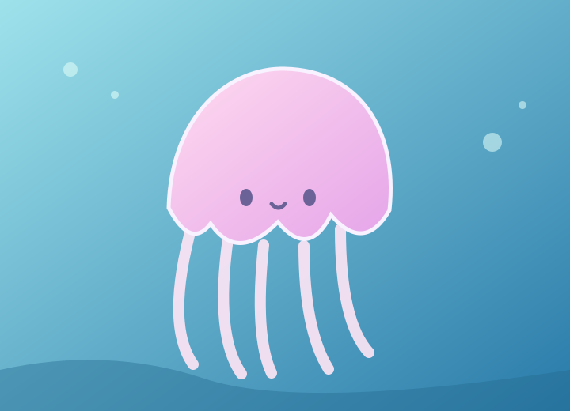

VISIT INFORMATION
ご利用案内
開館時間やアクセスの情報をご案内します。
ボタンを押して詳細を確認してください。
OPEN EVERY DAY
海と、もっと近くに。ゆっくり楽しめる、海辺の水族館。
開館時間 10:00 ～ 18:00
最終入館 17:00
アクセス みなと駅から徒歩8分（架空の施設です）
MEET OUR SEA LIFE
生きものたち
ボタンで3種類の生きものを切り替えてみよう。

01 / 03TODAY'S PICK
クラゲ
ゆったりと水中を漂う、幻想的な生きものです。
画像・名前・説明文・番号が一緒に変わります。
PLAN YOUR VISIT
海の世界への入場料金をチェック
チケットの種類と枚数を選んで、合計金額を計算できます。